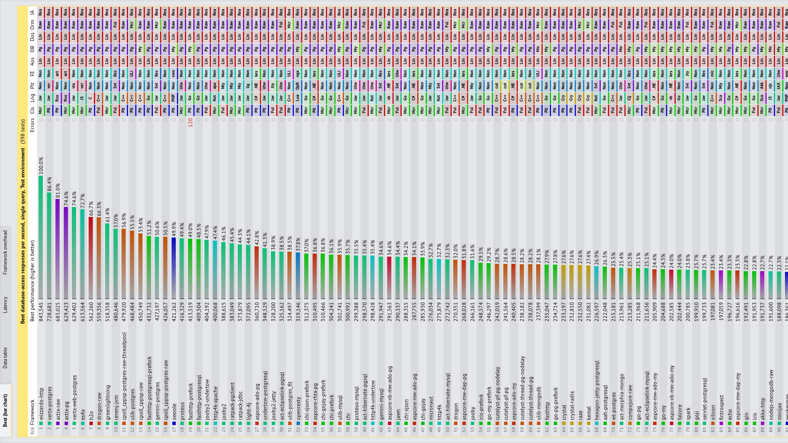

Crushing Latency
with Vert.x
Paulo LopesPrincipal Software Engineer
@pml0pes
https://www.linkedin.com/in/pmlopes/
pmlopes

la·​ten·cy | \ ˈlā-tᵊn(t)-sē \
Network latency is the term used to indicate any kind of delay that happens in data communication over a network.
(techopedia.com)
Latency by the numbers
- Amazon: every 100ms of latency costs 1% in sales
http://home.blarg.net/~glinden/StanfordDataMining.2006-11-29.ppt - Google: an extra 0.5 seconds in search page generation time dropped
traffic by 20%
http://glinden.blogspot.com/2006/11/marissa-mayer-at-web-20.html - A broker: could lose $4 million in revenues per millisecond if their
electronic trading platform is 5 milliseconds behind the competition
http://www.tabbgroup.com/PublicationDetail.aspx?PublicationID=346
Latency is not the problem
it's the symptom!
2007: Dan Pritchett
- Loosely Couple Components
- Use Asynchronous Interfaces
- Horizontally Scale from the Start
- Create an Active/Active Architecture
- Use a BASE instead of ACID Shared Storage Mode
2011 (Tim Fox): Vert.x
- Loosely Couple Components (event bus)
- Use Asynchronous Interfaces(non blocking I/O)
- Horizontally Scale from the Start (clustered)
Eclipse Vert.x is a tool-kit for building reactive applications on the JVM. https://vertx.io/
Why Non-Blocking I/O?
5ms / req time
# In optimal circumstances
1 Thread => 200 req/sec
8 Cores => 1600 req/sec
req time grows as threads fight for execution time
# PROCESS STATE CODES
# D Uninterruptible sleep (usually IO)
ps aux | awk '$8 ~ /D/ { print $0 }'
root 9324 0.0 0.0 8316 436 ? D< Oct15 0:00 /usr/bin/java...
when load is higher than max threads queuing builds up
# git@github.com:tsuna/contextswitch.git
./cpubench.sh
model name : Intel(R) Core(TM) i7-8650U CPU @ 1.90GHz
1 physical CPUs, 4 cores/CPU, 2 hardware threads/core
2000000 thread context switches in 2231974869ns
(1116.0ns/ctxsw)

grep 'CONFIG_HZ=' /boot/config-$(uname -r)
# CONFIG_HZ=1000
Practical example: Tomcat 9.0
- Default
maxThreads: 200 - Avg req time: 5ms
- Hypothetical High load: 1000 req
- Wasted wait/queue time: (1000 / 200 - 1) * 5 = 0~20ms
https://tomcat.apache.org/tomcat-9.0-doc/config/executor.html
at max utilization
CPU is mostly waiting
Non-Blocking I/O
Vert.x

1 CPU core fully used!
Vert.x
Intel(R) Core(TM) i7-8650U CPU @ 1.90GHz
100% CPU cores used!
Benchmarking is hard
- Meaningful benchmarks are even harder
- Techempower Framework Benchmarks
- Contributors: 545
- Pull Requests: 4138
- Commits: 11230
- Frameworks: 658
Baseline: JAX-RS
- Blocking API
- Thread Based
- Java
jax-rs
@GET
@Path("/queries")
World[]
queries(@QueryParam("queries") String queries)
{
World[] worlds = new World[queries];
Session session = emf.createEntityManager();
for (int i = 0; i < queries; i++) {
worlds[i] = session
.byId(World.class)
.load(randomWorld());
}
return worlds;
}
vert.x
void
queriesHandler(final RoutingContext ctx) {
World[] worlds = new World[getQueries(ctx)];
AtomicInteger cnt = new AtomicInteger();
for (int i = 0; i < getQueries(ctx); i++) {
db.preparedQuery(FIND_WORLD, ..., res -> {
final Row row = res.result()
.iterator()
.next();
worlds[cnt.incrementAndGet()] =
new World(row);
if (cnt.get() == queries) {
ctx.response()
.end(Json.encodeToBuffer(worlds));
}
});
}
}
Simple results
- Vert.x: 37,157 req/s
- Jax-RS: 14,493 req/s
Polyglot
English - 简体中文 - Português
What happens when you say Hello?
function handler (context) {
// the exchange context
context
// get the response object
.response()
// send the message and end
// the response
.end('你好');
}
Getting the response object
this.response = function() {
var __args = arguments;
if (__args.length === 0) {
if (that.cachedresponse == null) {
that.cachedresponse = utils.convReturnVertxGen(
HttpServerResponse,
j_routingContext["response()"]());
}
return that.cachedresponse;
} else if (typeof __super_response != 'undefined') {
return __super_response.apply(this, __args);
}
else throw new TypeError('invalid arguments');
};
In a nutshell
- Lots of conversions (GC)
- Constant switch from JS engine to Java code (somehow similar to context switching)
- Not suited for performance
- JIT optimization will stop at language cross
Node.js

JIT can't optimize it all
Where's Node?
ü§î
Can we make polyglot fast?
GraalVM: In a nutshell
Lots of conversions (GC)Constant switch from JS engine to Java code (somehow similar to context switching)Not suited for performanceJIT optimization will stop at language cross
ES4X
- GraalVM based
- Vert.x for I/O
- commonjs and ESM loader
- debug/profile chrome-devtools
ES4X design principles
- GraalJS (for fast JS runtime)
- Vert.x (for fast I/O + event loops)
- GraalVM (for full JIT)
.d.ts(for IDE support)
github.com/AlDanial/cloc v 1.72 T=0.09 s (401.5 files/s, 51963.8 lines/s)
-------------------------------------------------------------------------------
Language files blank comment code
-------------------------------------------------------------------------------
Java 26 389 683 1778
JavaScript 9 201 253 1226
-------------------------------------------------------------------------------
SUM: 35 590 936 3004
-------------------------------------------------------------------------------
Node.js vs ES4X
const cluster = require('cluster'),
numCPUs = require('os').cpus().length,
express = require('express');
if (cluster.isMaster) {
for (let i = 0; i < numCPUs; i++)
cluster.fork();
} else {
const app = module.exports = express();
app.get('/plaintext', (req, res) =>
res
.header('Content-Type', 'text/plain')
.send('Hello, World!'));
}
import { Router } from '@vertx/web';
const app = Router.router(vertx);
app.get("/plaintext").handler(ctx => {
ctx.response()
.putHeader("Content-Type", "text/plain")
.end('Hello, World!');
});
Polyglot GraalVM is fast.
what about latency?
Conclusion
- latency is not a problem, it's a symptom
- use non-blocking to fully use the CPU
- use vert.x ;-)
- polyglot is fine
- use graalvm for polyglot JIT optimizations
- node can be slow for server applications
- use ES4X ;-)
Let's connect!
-
@pml0pes -
pmlopes -
https://www.linkedin.com/in/pmlopes/ - https://reactiverse.io/es4x
- https://vertx.io
- https://graalvm.org